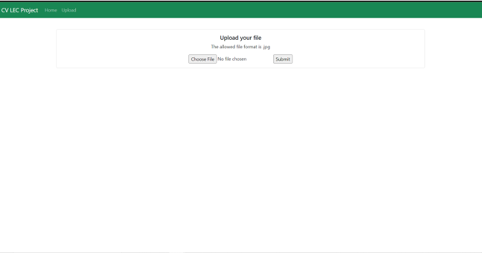
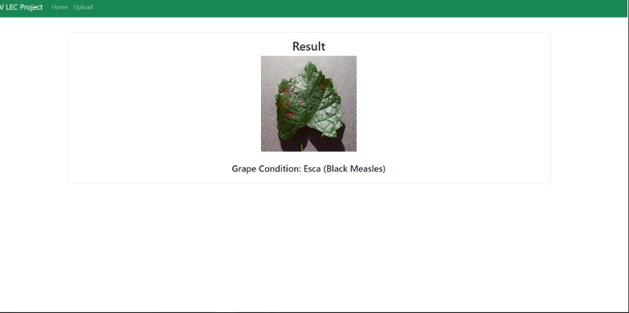

Problem & Dataset
- Task: classify an image into Healthy, Black Rot, Black Measles, or Leaf Blight.
- Source: derived from public plant-disease datasets (PlantVillage lineage), filtered to grape classes with a train/val/test split.
- Preprocessing: resize to 256x256 and use the framework's
preprocess_inputto match backbone expectations.
Approach
- Backbones: VGG-16 and ResNet50 used as frozen feature extractors with custom heads.
- Best model: VGG-16 features to a dense head, then the penultimate feature vector fed into XGBoost as the final classifier.
- Why XGBoost on deep features: tree ensembles separate non-linear boundaries efficiently with strong regularisation, which often generalises better than a fully-connected softmax head on small or medium datasets.
- Serving: a minimal Flask app lets users upload a leaf image and get a predicted class.
Results
| Model | Accuracy | Precision | Recall |
|---|---|---|---|
| ResNet50 (CNN) | 0.9590 | 0.9597 | 0.9570 |
| VGG-16 (CNN) | 0.9199 | 0.9413 | 0.9201 |
| VGG-16 + XGBoost | 0.9870 | 0.9857 | 0.9876 |
All scores computed on the project's test split.

Flask result page displaying the predicted disease class.
Implementation Notes
- 256x256 input to the backbones; heads of Flatten to Dense for CNN-only variants.
- For the hybrid, features are exported after the dense layers and then used to fit XGBoost.
- L2 regularisation performed best for the XGBoost setup in our tests.
- Monitor class balance and consider light augmentation (colour, flip) to avoid overfitting.
What I Learned
- Hybrid models (deep features + tree ensembles) can outperform pure CNN heads on modest datasets.
- Backbone choice matters, but the classifier head and regularisation design strongly influence final performance.
- A simple Flask deployment is an effective way to communicate AI results to non-technical audiences.
TensorFlow/KerasVGG-16ResNet50XGBoostFlaskNumPy/Pandas
"Powerful AI doesn't always need complexity, just the right balance of features, logic, and clarity."